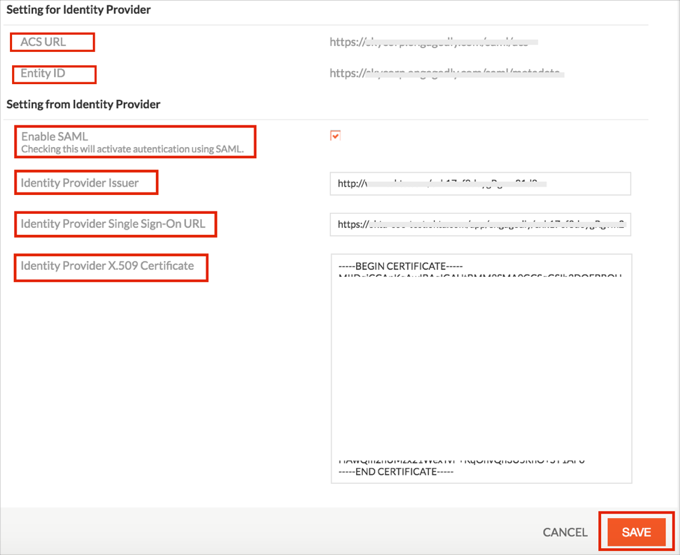
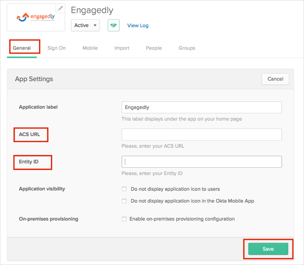

Log in to Engagedly as a Site Administrator.
Navigate to Settings, then select SAML SSO.
Make a note of the following (in the Setting for Identity Provider section):
ACS URL.
Entity ID.
Enter the following (in the Setting from Identity Provider section):
Check the Enable SAML box.
Identity Provider Issuer: Copy and paste the following:
Sign into the Okta Admin Dashboard to generate this variable.
Identity Provider Single Sign-On URL: Copy and paste the following:
Sign into the Okta Admin Dashboard to generate this variable.
Identity Provider X.509 Certificate: Copy and paste the following (PEM text format):
Sign into the Okta Admin Dashboard to generate this variable.
Click Save.

In Okta, select the General tab for the Engagedly app, then click Edit and enter the following:
ACS URL: Enter the value you saved earlier.
Entity ID: Enter the value you saved earlier.
Click Save.

Done!
Notes:
IdP-initiated flows and SP-initiated flows are both supported.
Just In Time (JIT) Provisioning is not supported.